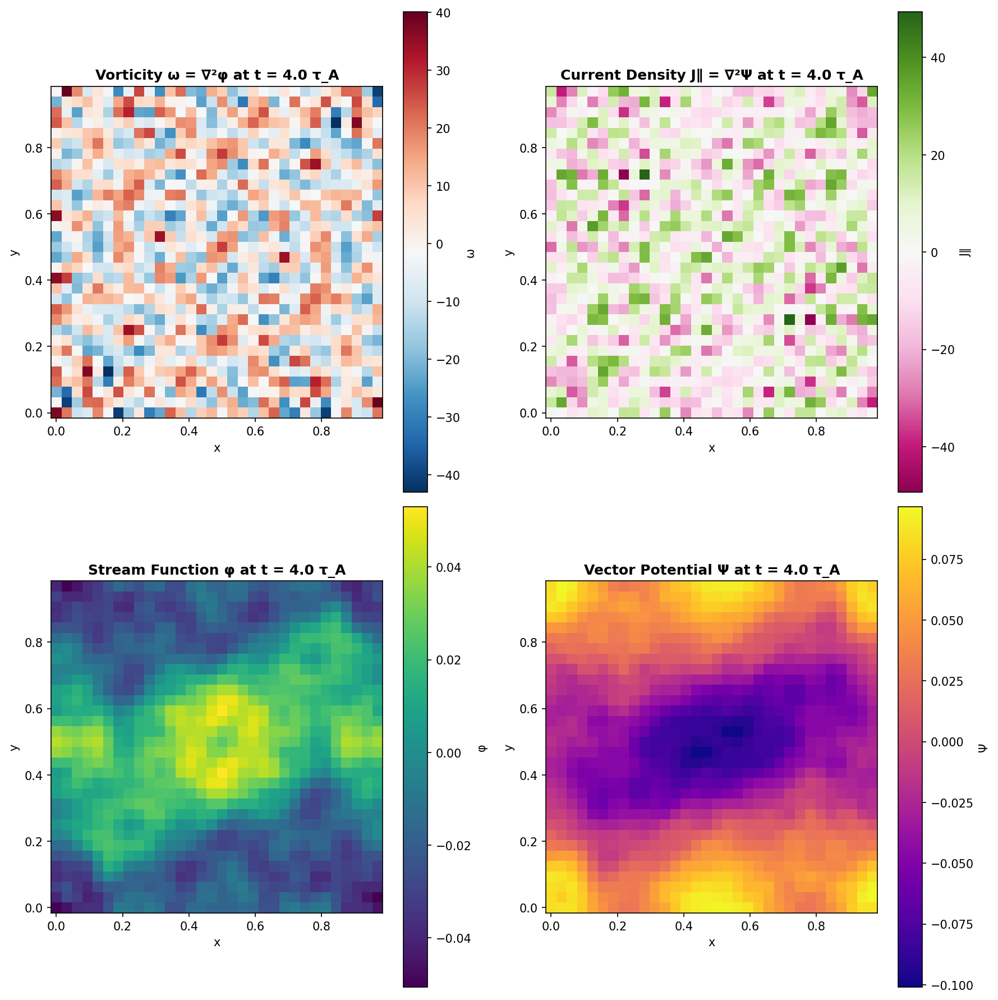

Physics-Oracle Validation: How to Trust Code You've Never Read
In the previous post, I described the autonomy gradient—how AI effectiveness varies from ~100% for code implementation to ~0% for research direction. But I left a question hanging: if you're not reading the code, how do you know it's correct?
This is not a trivial problem. Claude generated ~3,500 lines of JAX implementing spectral methods, Hermite polynomial couplings, and exponential integrating factors. I didn't read any of it. How can I trust it?
The answer is what I call physics-oracle validation: using physics itself as the specification against which code is tested.
This is not a new idea. It was my lived experience of doing physics research. As an undergraduate researcher, you meet your advisor periodically and get feedback only on the physics bits of the project. The advisor doesn't really read your code or help you debug. I tried to emulate the same setup.
This post explains the methodology, its limitations, and the honest question of who can actually replicate this approach.
The Trust Problem
Traditional approaches to code verification—code review, unit tests, static analysis—require understanding implementation details. But that defeats the productivity benefit of AI assistance. If I have to read every line Claude writes, I might as well write it myself.
The insight is that scientific simulation has something most software doesn't: an external oracle. Physics provides ground truth. If the code reproduces known physical results, it's correct—regardless of how it's implemented. And honestly this is how I verified the original GANDALF--if you look at the code, there are no tests. I would run a simulation, look at the physics results, and that was my validation.
This is a fundamentally different verification model. I'm not checking how the code works. I'm checking what it produces.
Four Levels of Validation
I used four increasingly stringent validation levels, each testing different aspects of the implementation:
Level 1: Linear Regime
Problems with exact analytical solutions. Alfvén waves should propagate at exactly the Alfvén speed. The dispersion relation is exact—errors should be at machine precision.
Expected precision: ~10⁻¹⁵ (floating point epsilon)
What it validates: Time integration, linear operators, basic correctness
This is the easiest test. If linear physics is wrong, nothing else matters. Claude passed this on the first serious attempt.
Level 2: Nonlinear Conservation
Invariants that should be maintained during nonlinear evolution. The Orszag-Tang vortex—a standard MHD benchmark—should conserve total energy even as kinetic and magnetic energy slosh back and forth.

Expected precision: ~10⁻⁶ over many dynamical times
What it validates: Nonlinear terms, Poisson bracket discretization, spectral accuracy
This is where subtle bugs show up. Wrong operator ordering, sign errors, aliasing issues—they all manifest as energy drift. The code took several iterations to pass this test. Each failure gave diagnostic information: exponential growth meant sign errors, linear drift meant conservation violations, sudden blow-up meant aliasing.
Level 3: Statistical Equilibrium
Emergent behavior matching theory. Driven turbulence should show Kolmogorov k⁻⁵/³ scaling. This isn't programmed in—it emerges from correct multiscale energy transfer.
Expected precision: Power law exponent within ~0.05
What it validates: Forcing implementation, dissipation mechanisms, scale-by-scale energy transfer
This was the hard one. As I described in the previous post, achieving the correct spectrum required extensive parameter tuning. But the test itself is unambiguous: either the spectrum shows the right scaling or it doesn't.
Level 4: Velocity Space
Kinetic physics validation. Phase mixing rates and Hermite moment spectra should match kinetic theory predictions.
What it validates: Velocity-space operators, Landau damping, collisionless physics
This tests the kinetic aspects of GANDALF that distinguish it from pure MHD. The code should capture the essential velocity-space dynamics that make plasma physics interesting.
Why This Works
Physics-oracle testing has several advantages:
Tests behavior, not implementation: I don't care if Claude used a for-loop or vectorization, whether it allocated memory efficiently, or if the variable names make sense. I care if the physics is right.
Scales to complex codes: Full code review of 3,500 lines would take days. Physics validation takes hours.
Catches subtle physics errors that unit tests miss: Code can pass all unit tests while producing wrong physics. A spectral method might have correct FFT calls but wrong normalization. Unit tests might pass; physics outputs would fail.
Provides diagnostic information: When tests fail, how they fail indicates what's wrong. Energy growing exponentially suggests sign errors. Energy drifting linearly suggests conservation bugs. Wrong spectral slopes suggest forcing or dissipation issues.
The Limitations
This methodology has important limitations I need to be honest about.
Requires known results: Physics-oracle testing only works when you know what the physics should do. For established physics like KRMHD, canonical benchmarks exist. For genuinely novel physics, you face circular reasoning: validating code requires knowing the answer, but discovering the answer requires trusted code.
May miss bugs that preserve tested properties: A bug that happens to conserve energy and produce correct spectra would pass all tests. The methodology provides high confidence, not certainty.
Requires domain expertise to interpret: When the Orszag-Tang test showed 10⁻⁴ energy conservation instead of 10⁻⁶, is that acceptable? It depends on the timestep, the resolution, the integration time. These judgments require physics intuition.
For frontier physics, complementary validation approaches are needed—comparison with other codes, analytical limits, asymptotic analysis. Physics-oracle testing is powerful but not complete.
The N=1 Question
A friend asked me: "How much of an N=1 are you? Could someone else do this?"
Honest answer: probably not yet, at least not without a similar background.
This success required a specific—and possibly non-generic—combination of expertise:
Domain expertise (PhD in plasma physics): Critical for interpreting test results and catching physics errors. When Claude suggested using GS2 (a full gyrokinetics code) for problems where reduced equations suffice, only domain knowledge caught the error. When simulations showed marginal stability, only physics intuition knew that was acceptable.
Software engineering intuition (decade in tech): Enabled the decision to rewrite in JAX rather than resurrect legacy Fortran/CUDA. Understanding of modern frameworks, deployment options, and how to write specifications AI can implement effectively.
Generative AI experience (recent work): Provided realistic expectations of AI capabilities, effective interaction patterns, and understanding of failure modes. I knew to create step-by-step plans rather than open-ended requests. I knew to set up the dual-Claude review pattern to keep the code honest.
AI proved valuable at both ends of the research process—literature synthesis and code implementation—but the middle stages (tool selection, physics judgment, validation interpretation) required human expertise.
Could this be taught? Could I package the workflow into something a researcher without all three backgrounds could use? I genuinely don't know. That's an open question worth exploring.
Hallucination: A Task-Dependent Problem
One finding was interesting: hallucination severity depends strongly on task constraints.
Code generation (~100% autonomy): Minimal hallucination. Code either runs or crashes. Physics outputs either match theory or don't. Tight constraints leave little room for fabrication.
Paper writing (~50% autonomy): Significant hallucination. When helping with the physics paper, Claude fabricated:
- Computational resources ("timings obtained on Princeton's Stellar cluster" when all runs used my MacBook)
- Development timelines ("three years of part-time development" versus the actual one month)
- GPU runtimes for simulations that were never performed
- Physics errors including wrong cascade directions
These were caught in review. But the confident assertion of false claims was notable.
Key insight: Hallucination correlates inversely with task constraints. High-autonomy tasks have tight feedback—code must run, physics must match. Medium-autonomy tasks like prose have looser feedback, allowing AI to extrapolate beyond given facts.
The claim "I never read the AI-generated code" requires nuance: for physics code, physics outputs constrain hallucination. For prose, human review remains essential.
What This Means Going Forward
Physics-oracle validation isn't a complete solution, but it's a practical methodology for a specific problem: trusting AI-generated scientific code in domains with established benchmarks.
The approach suggests a broader principle: verification should operate at the level of the specification, not the implementation. For physics code, the specification is physical behavior. For other domains, finding the right oracle is the key challenge.
If AI continues improving at implementation while humans retain judgment—the autonomy gradient I described in the last post—then validation methodologies become increasingly important. The bottleneck shifts from writing code to knowing what code should do.
That's a different skill. And it's one physicists have always had.
Acknowledgements
Thanks to Alex Schekochihin and Nuno Loureiro for discussions throughout this project. Thanks to everyone who read the earlier posts and pushed back on the optimistic framing—you made this analysis sharper.
The code: github.com/anjor/gandalf The paper: github.com/anjor/gandalf-paper

 23 GitHub issues tracked every section and benchmark
23 GitHub issues tracked every section and benchmark Issue #55: Human review caught fabricated Princeton cluster claims, false timelines, and invented benchmarks
Issue #55: Human review caught fabricated Princeton cluster claims, false timelines, and invented benchmarks Claude GitHub App provided automated review on every PR
Claude GitHub App provided automated review on every PR